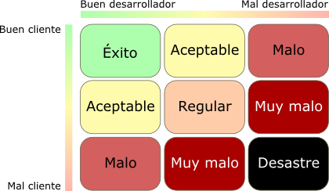
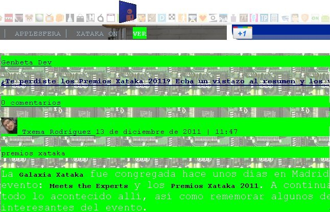

|  |

Programadores y diseñadores, como en cualquier otra profesión, los hay buenos, regulares y malos; no vamos a engañarnos. El problema es que la calidad de sus creaciones no depende sólo de ellos, sino también de los requisitos y apetencias del cliente de turno. Ahí es donde entran en juego las facultades de psicólogo que no nos enseñaron en la facultad de informática.
Ya nos habló en su día nuestro compañero Óscar Campos de lo importante que es escuchar al cliente, pero a veces el problema nace ahí, en que sabemos lo que quiere el cliente y cómo lo quiere, pero sabemos que no es la mejor solución, ya sea visualmente, computacionalmente o a nivel de negocio.
En algunos casos todo parece ir como la seda: el cliente tiene un problema abordable, tú le ofreces una solución eficaz y, llegados al acuerdo, la construyes. Y de repente, el apartado gráfico no le convence y empieza a querer meter mano en todo.
- El texto queda muy feo, habría que justificarlo.
– Sí, pero en una página con grandes cantidades de texto es más fácil leer cuando el texto se alinea a la izquierda sin justificar. Todos los periódicos lo hacen así.
– Pero nosotros no somos un periódico.
- ¿Por qué no ponemos una letra tipo Comic Sans?
– Porque es infantil y subconscientemente está ligada a ámbitos poco serios.
– Pero es más amigable* que la que hay ahora.
(*) Lo malo de tener diarrea verbal y utilizar ciertos términos al presentar un trabajo al cliente es que se pueden aprender esos términos y utilizarlos en tu contra sin ton ni son.
- Deberíamos cambiar todos los tonos azules y grises por naranjas y rosas.
– ¡Pero si la web es para una funeraria!
Y es que ya lo dice el dicho: «para gustos los colores», y en el aspecto visual es donde cada uno tiene sus propios gustos y preferencias e intenta imponerlos a los demás. De nada sirve que el diseñador haya realizado un diseño sobrio, moderno, elegante y acorde al producto, si el cliente se empeña en ir cambiando “detallitos” puede que tu aplicación acabe pareciendo una página web de esas que poblaban Geocities allá por 1996. Con herramientas como el Geocitiesizer podréis comprobar el esperpento al que pueden quedar reducidas vuestras páginas, como el siguiente ejemplo de GenbetaDev:

Quizá uno de los mejores ejemplos de cómo un proyecto bien encauzado puede convertirse poco a poco en un infierno sea este cómic de The Oat Meal.
Si es difícil bajar del burro al cliente con mal gusto estético, todavía lo es más convencer de la mejor solución al cliente al que “su cuñado le ha dicho que tal tecnología es mejor que tal otra”. Supongo que debe de haber alguna parte de la psique humana que les permite admitir que no tienen buen gusto, pero les impida reconocer que alguien sin conocimientos les ha engañado o informado mal, y quizá por ese motivo llegan a defender las tesis de un tercero con mucha más vehemencia incluso de lo que lo haría él mismo. Así es como he llegado a oír barbaridades como:
Llegados a este punto, normalmente uno desea dar una respuesta categórica como la de aquella hamburguesería que decía “We don’t make loans and the bank doesn’t make hamburgers“. Es decir, yo no me meto en tu lógica de negocio y tú no te metes en mis herramientas de desarrollo.
Sin embargo lo normal es tragar porque al fin y al cabo el cliente es el que paga. Ante esta situación en la que te ves forzado a hacer algo que nunca harías, es normal acabar pensando que un trabajo así puede minar tu reputación. Hay quien propone medidas como encerrar todo el código indeseable dentro de un nuevo tag XHTML: el tag CWT (Client Wanted This) y que al menos tus compañeros de gremio sepan que no harías tal chapuza de no ser por exigencia del de arriba.
No es buena idea decirle a tu cliente que sabes más de su ámbito de negocio que él, porque incluso aunque lo pienses, lo más probable es que no sea así. Pero sí que es posible que sepas más de la relación de su negocio con la tecnología de lo que él sabe. La pena es que si no quiere oír tus consejos, o ha oído antes los de su cuñado y ahora piensa que los tuyos no tienen sentido, no te quedará más remedio que fabricar aplicaciones con una lógica de negocio absurda que las vuelva inusables.
Os contaré una de mis experiencias con un cliente de un importante laboratorio farmacéutico. Estábamos haciendo un proyecto bastante bonito para que los médicos de pacientes con esquizofrenia pudieran delegar en enfermeros y cuidadores cierta clase de responsabilidades y darles la posibilidad de enviar mensajes SMS mediante una web, con consejos, recomendaciones y fecha de cita médica para la siguiente dosis de su medicamento inyectable. Sin embargo, el cuñado de turno llegó desde el departamento legal diciendo que “si algún enfermero introdujese un texto malintencionado en el SMS la marca perdería prestigio”.
Así que hubo que cambiar toda la lógica y lo que antes era un SMS que se enviaba de forma inmediata por la web, ahora requería una aprobación por parte del médico responsable del enfermero, que no conocía al cuidador responsable del enfermo, cosa que el enfermero sí hacía. Así que se consiguió tener dos problemas: por una parte en lugar de aligerar al médico, se le había cargado con una tarea más, la de revisor de mensajes; y por otra parte, si el médico pasaba del tema y sólo confirmaba los mensajes una vez en semana, los recordatorios de cita podían llegar tarde, confundiendo al cuidador o al propio enfermo.
Como informáticos, cumplimos nuestra misión: en primer lugar, por ética, les informamos de que adoptar esa lógica de negocio significaría estrangular el proyecto hasta matarlo, y que era mejor liquidar lo hecho que seguir poniendo ladrillos a una casa cuyos cimientos se tambaleaban. Y en segundo lugar, ya que quisieron seguir adelante, acabamos desarrollándolo de la mejor manera posible, añadiendo la posibilidad de coger textos prediseñados que no tuvieran así que ser verificados por el médico, y de esta manera intentar puentear una de las dificultades impuestas por el propio cliente a sí mismo.
Los programadores y diseñadores tenemos la mala costumbre de querer comer todos los días, así que no queda más remedio que aceptar estos trabajos en los que no estamos a gusto con el resultado. Eso sí, es importante no estar mucho tiempo trabajando en estas condiciones, ya que así es como se pierde la autoestima y el cariño hacia una profesión que puede ser tan apasionante como la de desarrollador.
Y si tampoco se puede evitar el tener que hacerlo por un largo tiempo, quizá sea una buena idea buscarse un pequeño proyecto personal para los ratos libres, y así poder sentir que se hace algo productivo, eficaz y bonito.
En GenbetaDev | La importancia de escuchar al cliente
| |